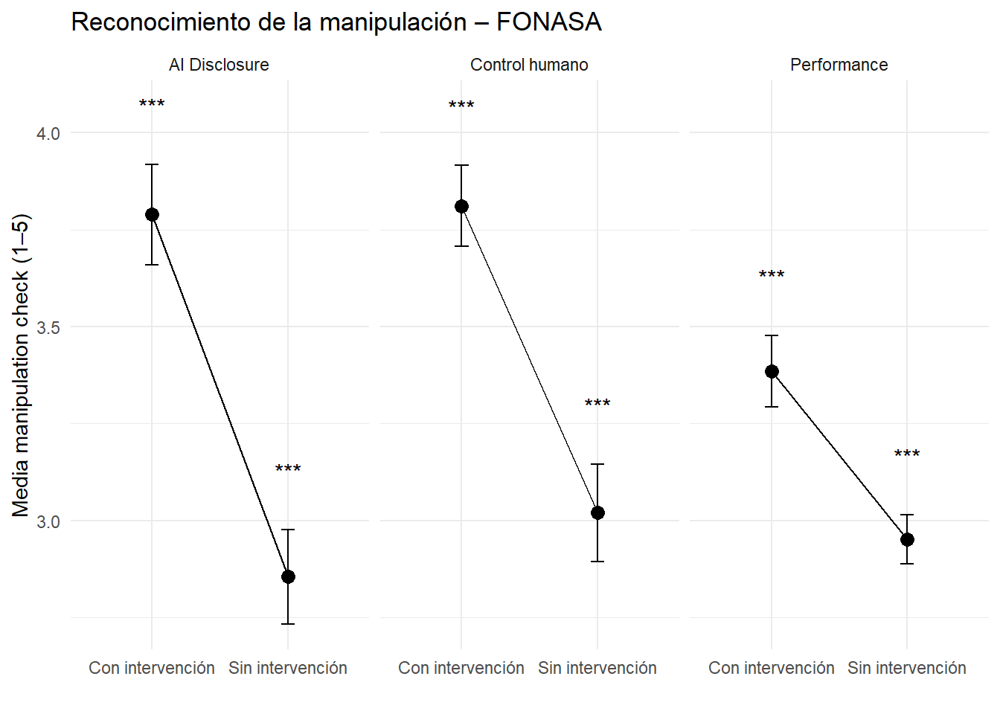
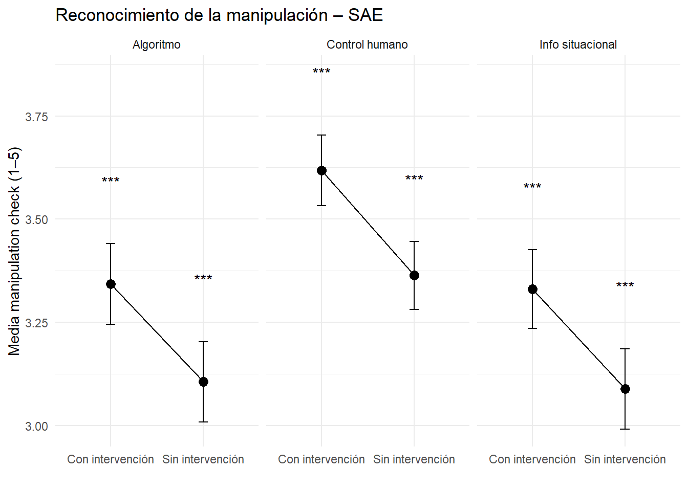

Exploración de los Manipulation Check
Man Check differences by intervention

Models Man Check
Fonasa
| Objective knowledge | Objective knowledge | Subjective knowledge | Subjective knowledge | Moral trust (MDMT) | Moral trust (MDMT) | |
| Predictors | Estimates | Estimates | Estimates | Estimates | Estimates | Estimates |
| Intercept | 3.30 *** (0.07) |
2.46 *** (0.15) |
2.92 *** (0.06) |
2.44 *** (0.13) |
3.19 *** (0.06) |
3.13 *** (0.13) |
| Ai Disclosure (Ex ante) | 0.48 *** (0.10) |
0.20 (0.11) |
0.12 (0.09) |
-0.04 (0.09) |
-0.15 (0.08) |
-0.17 (0.09) |
| Man. Check Ai Disclosure | 0.30 *** (0.05) |
0.17 *** (0.04) |
0.02 (0.04) |
|||
| Observations | 514 | 514 | 514 | 514 | 514 | 514 |
| R2 / R2 adjusted | 0.042 / 0.040 | 0.109 / 0.106 | 0.004 / 0.002 | 0.034 / 0.030 | 0.007 / 0.005 | 0.008 / 0.004 |
| * p<0.05 ** p<0.01 *** p<0.001 | ||||||
| Objective knowledge | Objective knowledge | Subjective knowledge | Subjective knowledge | Moral trust MDMT | Moral trust MDMT | Moral trust McKnight | Moral trust McKnight | Functional trust MDMT | Functional trust MDMT | Functional trust McKnight | Functional trust McKnight | |
| Predictors | Estimates | Estimates | Estimates | Estimates | Estimates | Estimates | Estimates | Estimates | Estimates | Estimates | Estimates | Estimates |
| Intercept | 6.57 *** (0.13) |
7.96 *** (0.31) |
2.94 *** (0.06) |
2.17 *** (0.14) |
2.81 *** (0.06) |
1.73 *** (0.14) |
2.80 *** (0.06) |
1.67 *** (0.15) |
2.77 *** (0.06) |
1.77 *** (0.14) |
2.60 *** (0.06) |
1.42 *** (0.15) |
| Control humano (Ex post) | 0.74 *** (0.18) |
1.10 *** (0.20) |
0.00 (0.08) |
-0.20 * (0.09) |
0.02 (0.09) |
-0.26 ** (0.09) |
0.06 (0.09) |
-0.23 * (0.09) |
0.03 (0.09) |
-0.23 * (0.09) |
0.08 (0.09) |
-0.23 * (0.09) |
| Man. Check Control humano | -0.46 *** (0.10) |
0.26 *** (0.04) |
0.36 *** (0.04) |
0.37 *** (0.05) |
0.33 *** (0.04) |
0.39 *** (0.04) |
||||||
| Observations | 514 | 514 | 514 | 514 | 514 | 514 | 514 | 514 | 514 | 514 | 514 | 514 |
| R2 / R2 adjusted | 0.030 / 0.029 | 0.073 / 0.069 | 0.000 / -0.002 | 0.066 / 0.063 | 0.000 / -0.002 | 0.118 / 0.114 | 0.001 / -0.001 | 0.117 / 0.113 | 0.000 / -0.002 | 0.101 / 0.097 | 0.002 / -0.000 | 0.130 / 0.127 |
| * p<0.05 ** p<0.01 *** p<0.001 | ||||||||||||
| Objective knowledge | Objective knowledge | Subjective knowledge | Subjective knowledge | Moral trust MDMT | Moral trust MDMT | Moral trust McKnight | Moral trust McKnight | Functional trust MDMT | Functional trust MDMT | Functional trust McKnight | Functional trust McKnight | |
| Predictors | Estimates | Estimates | Estimates | Estimates | Estimates | Estimates | Estimates | Estimates | Estimates | Estimates | Estimates | Estimates |
| Intercept | 6.58 *** (0.13) |
4.39 *** (0.43) |
2.94 *** (0.06) |
1.48 *** (0.19) |
2.76 *** (0.06) |
1.46 *** (0.20) |
2.79 *** (0.06) |
1.53 *** (0.21) |
2.72 *** (0.06) |
1.38 *** (0.20) |
2.59 *** (0.06) |
1.43 *** (0.21) |
| Performance (Ex post) | 0.74 *** (0.18) |
0.42 * (0.19) |
0.00 (0.08) |
-0.21 * (0.08) |
0.13 (0.09) |
-0.06 (0.09) |
0.09 (0.09) |
-0.10 (0.09) |
0.13 (0.09) |
-0.07 (0.09) |
0.09 (0.09) |
-0.08 (0.09) |
| Man. Check Performance | 0.74 *** (0.14) |
0.50 *** (0.06) |
0.44 *** (0.06) |
0.42 *** (0.07) |
0.45 *** (0.06) |
0.40 *** (0.07) |
||||||
| Observations | 514 | 514 | 514 | 514 | 514 | 514 | 514 | 514 | 514 | 514 | 514 | 514 |
| R2 / R2 adjusted | 0.031 / 0.029 | 0.081 / 0.077 | 0.000 / -0.002 | 0.114 / 0.110 | 0.004 / 0.002 | 0.086 / 0.083 | 0.002 / -0.000 | 0.071 / 0.067 | 0.005 / 0.003 | 0.093 / 0.089 | 0.002 / 0.000 | 0.062 / 0.059 |
| * p<0.05 ** p<0.01 *** p<0.001 | ||||||||||||
SAE
| Objective knowledge | Objective knowledge | Subjective knowledge | Subjective knowledge | Functional trust (McKnight) | Functional trust (McKnight) | Moral trust (McKnight) | Moral trust (McKnight) | |
| Predictors | Estimates | Estimates | Estimates | Estimates | Estimates | Estimates | Estimates | Estimates |
| Intercept | 4.02 *** (0.09) |
1.85 *** (0.26) |
3.14 *** (0.06) |
0.95 *** (0.14) |
3.30 *** (0.06) |
1.51 *** (0.15) |
3.15 *** (0.06) |
1.23 *** (0.15) |
| Algorithmic disclosure (Ex ante) | 0.13 (0.13) |
-0.03 (0.13) |
0.12 (0.09) |
-0.05 (0.07) |
0.11 (0.09) |
-0.02 (0.08) |
0.09 (0.08) |
-0.06 (0.07) |
| Man. Check Algorithm | 0.70 *** (0.08) |
0.70 *** (0.04) |
0.58 *** (0.05) |
0.62 *** (0.05) |
||||
| Observations | 514 | 514 | 514 | 514 | 514 | 514 | 514 | 514 |
| R2 / R2 adjusted | 0.002 / -0.000 | 0.136 / 0.132 | 0.004 / 0.002 | 0.337 / 0.334 | 0.004 / 0.002 | 0.232 / 0.229 | 0.002 / 0.000 | 0.266 / 0.264 |
| * p<0.05 ** p<0.01 *** p<0.001 | ||||||||
| Objective knowledge | Objective knowledge | Subjective knowledge | Subjective knowledge | Functional trust (McKnight) | Functional trust (McKnight) | Moral trust (McKnight) | Moral trust (McKnight) | |
| Predictors | Estimates | Estimates | Estimates | Estimates | Estimates | Estimates | Estimates | Estimates |
| Intercept | 3.82 *** (0.09) |
1.41 *** (0.25) |
3.11 *** (0.06) |
0.79 *** (0.14) |
3.24 *** (0.06) |
1.23 *** (0.15) |
3.11 *** (0.06) |
1.16 *** (0.15) |
| Situational information (Ex ante) | 0.55 *** (0.13) |
0.36 ** (0.12) |
0.18 * (0.09) |
-0.01 (0.07) |
0.24 ** (0.08) |
0.08 (0.07) |
0.17 * (0.08) |
0.01 (0.07) |
| Man. Check Situational information | 0.78 *** (0.08) |
0.75 *** (0.04) |
0.65 *** (0.05) |
0.63 *** (0.05) |
||||
| Observations | 514 | 514 | 514 | 514 | 514 | 514 | 514 | 514 |
| R2 / R2 adjusted | 0.032 / 0.030 | 0.194 / 0.191 | 0.008 / 0.006 | 0.377 / 0.375 | 0.015 / 0.013 | 0.295 / 0.292 | 0.008 / 0.006 | 0.274 / 0.271 |
| * p<0.05 ** p<0.01 *** p<0.001 | ||||||||
| Objective knowledge | Objective knowledge | Subjective knowledge | Subjective knowledge | Functional trust (McKnight) | Functional trust (McKnight) | Moral trust (McKnight) | Moral trust (McKnight) | |
| Predictors | Estimates | Estimates | Estimates | Estimates | Estimates | Estimates | Estimates | Estimates |
| Intercept | 4.29 *** (0.10) |
1.20 *** (0.32) |
3.16 *** (0.06) |
0.95 *** (0.19) |
3.32 *** (0.06) |
1.26 *** (0.19) |
3.19 *** (0.06) |
1.16 *** (0.18) |
| Human control (Ex post) | 0.10 (0.13) |
-0.14 (0.13) |
0.17 * (0.08) |
0.00 (0.07) |
0.20 * (0.08) |
0.05 (0.08) |
0.17 * (0.08) |
0.02 (0.07) |
| Man. Check Human control | 0.92 *** (0.09) |
0.66 *** (0.05) |
0.61 *** (0.05) |
0.60 *** (0.05) |
||||
| Observations | 514 | 514 | 514 | 514 | 514 | 514 | 514 | 514 |
| R2 / R2 adjusted | 0.001 / -0.001 | 0.171 / 0.167 | 0.008 / 0.006 | 0.235 / 0.232 | 0.012 / 0.010 | 0.207 / 0.203 | 0.009 / 0.007 | 0.212 / 0.209 |
| * p<0.05 ** p<0.01 *** p<0.001 | ||||||||
Modelos consolidades
| Objective knowledge (Ex-pos) | Subjective knowledge (Ex-pos) | Moral trust MDMT (Ex-pos) | Moral trust McKnight (Ex-pos) | Functional trust MDMT (Ex-pos) | Functional trust McKnight (Ex-pos) | |
| Predictors | Estimates | Estimates | Estimates | Estimates | Estimates | Estimates |
| Intercept | 5.06 *** (0.79) |
0.72 * (0.35) |
0.35 (0.36) |
0.48 (0.39) |
0.24 (0.37) |
0.27 (0.38) |
| Human control (Ex-pos) | 1.12 *** (0.18) |
-0.18 * (0.08) |
-0.25 ** (0.08) |
-0.22 * (0.09) |
-0.22 * (0.09) |
-0.22 * (0.09) |
| Performance (Ex-pos) | 0.45 * (0.18) |
-0.16 * (0.08) |
-0.03 (0.08) |
-0.06 (0.09) |
-0.03 (0.08) |
-0.05 (0.09) |
| AI disclosure (Ex-ante) | 0.05 (0.19) |
0.02 (0.08) |
0.01 (0.09) |
0.14 (0.09) |
0.06 (0.09) |
0.10 (0.09) |
| Man. Check Human control | -0.39 *** (0.09) |
0.26 *** (0.04) |
0.35 *** (0.04) |
0.37 *** (0.04) |
0.33 *** (0.04) |
0.38 *** (0.04) |
| Man. Check performance | 0.61 *** (0.14) |
0.46 *** (0.06) |
0.43 *** (0.07) |
0.42 *** (0.07) |
0.45 *** (0.07) |
0.40 *** (0.07) |
| Man. Check AI disclosure | 0.27 ** (0.09) |
0.06 (0.04) |
-0.03 (0.04) |
-0.01 (0.04) |
-0.04 (0.04) |
-0.05 (0.04) |
| Género: Hombre | 0.09 (0.17) |
0.01 (0.08) |
0.09 (0.08) |
-0.03 (0.08) |
0.08 (0.08) |
0.03 (0.08) |
| Edad | -0.03 *** (0.01) |
-0.00 (0.00) |
0.01 (0.00) |
0.00 (0.00) |
0.01 (0.00) |
0.01 * (0.00) |
| Educación: Media completa | 0.62 (0.55) |
-0.03 (0.25) |
-0.22 (0.26) |
-0.33 (0.27) |
-0.12 (0.26) |
-0.34 (0.27) |
| Educación: Superior | 0.75 (0.54) |
0.07 (0.24) |
-0.13 (0.25) |
-0.32 (0.27) |
-0.01 (0.25) |
-0.30 (0.26) |
| Observations | 512 | 512 | 512 | 512 | 512 | 512 |
| R2 / R2 adjusted | 0.197 / 0.181 | 0.186 / 0.170 | 0.212 / 0.196 | 0.193 / 0.177 | 0.200 / 0.185 | 0.203 / 0.187 |
| * p<0.05 ** p<0.01 *** p<0.001 | ||||||
| Objective knowledge (Ex post) | Subjective knowledge (Ex post) | Moral trust McKnight (Ex post) | Functional trust McKnight (Ex post) | |
| Predictors | Estimates | Estimates | Estimates | Estimates |
| Intercept | 0.46 (0.54) |
0.06 (0.27) |
0.38 (0.30) |
0.35 (0.29) |
| Human control (Ex post) | -0.10 (0.12) |
0.03 (0.06) |
0.07 (0.07) |
0.05 (0.06) |
| Situational information (Ex ante) | 0.29 * (0.12) |
0.05 (0.06) |
0.05 (0.07) |
-0.02 (0.06) |
| Algorithmic disclosure (Ex ante) | 0.01 (0.12) |
-0.05 (0.06) |
-0.09 (0.07) |
-0.09 (0.06) |
| Man. Check Human control | 0.47 *** (0.11) |
0.13 * (0.05) |
0.18 ** (0.06) |
0.19 ** (0.06) |
| Man. Check Situational information | 0.29 ** (0.11) |
0.41 *** (0.05) |
0.36 *** (0.06) |
0.31 *** (0.06) |
| Man. Check Algorithmic disclosure | 0.42 *** (0.11) |
0.43 *** (0.05) |
0.33 *** (0.06) |
0.35 *** (0.06) |
| Género: Hombre | 0.08 (0.12) |
-0.07 (0.06) |
-0.10 (0.07) |
-0.05 (0.06) |
| Edad | -0.00 (0.01) |
-0.00 (0.00) |
0.00 (0.00) |
0.00 (0.00) |
| Educación: Media completa | -0.25 (0.38) |
0.20 (0.19) |
0.35 (0.21) |
0.24 (0.21) |
| Educación: Superior | -0.08 (0.37) |
0.17 (0.19) |
0.17 (0.21) |
0.08 (0.20) |
| Observations | 512 | 512 | 512 | 512 |
| R2 / R2 adjusted | 0.265 / 0.251 | 0.525 / 0.515 | 0.410 / 0.398 | 0.400 / 0.388 |
| * p<0.05 ** p<0.01 *** p<0.001 | ||||
GVIF Df GVIF^(1/(2*Df))
control_humano_fonasa 1.188106 1 1.090003
performance_fonasa 1.132481 1 1.064181
ai_disclosure_fonasa 1.245378 1 1.115965
fonasa_man_check_ch 1.215769 1 1.102619
fonasa_man_check_perf 1.273910 1 1.128676
fonasa_man_check_aidisclosure 1.364961 1 1.168315
genero 1.030051 1 1.014914
edad_num 1.015161 1 1.007552
education_recoded 1.022155 2 1.005493 GVIF Df GVIF^(1/(2*Df))
control_humano 1.042506 1 1.021032
inf_situacional 1.030559 1 1.015164
disclosure 1.030412 1 1.015092
sae_man_check_controlh 1.594980 1 1.262925
sae_man_check_infosit 2.030578 1 1.424984
sae_man_check_algoritmo 2.167216 1 1.472147
genero 1.029922 1 1.014851
edad_num 1.016126 1 1.008031
education_recoded 1.020191 2 1.005010